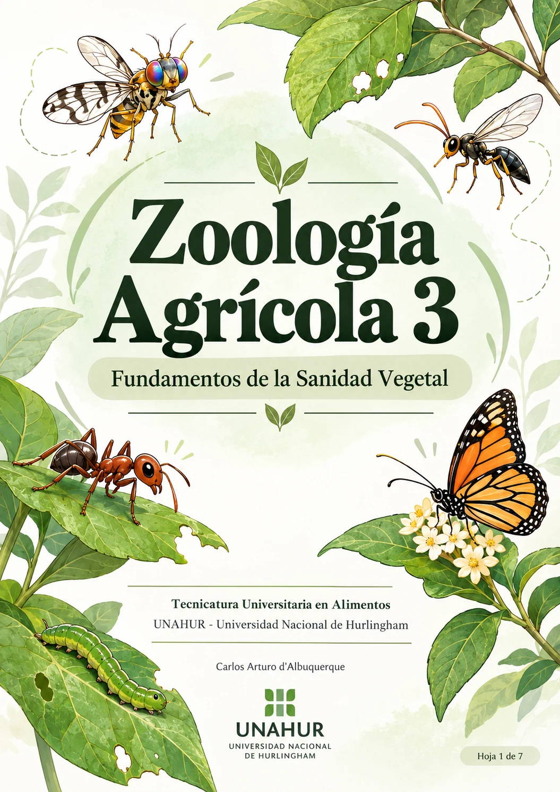

UNAHUR · VIVERISMO · GUÍA DE ESTUDIO 05
Insectos de importancia agrícolaZOOLOGÍA 3
Tres órdenes.
Muchas historias.
Conocé dípteros, himenópteros y lepidópteros: sus rasgos, ciclos, ejemplos y su papel en los cultivos. Seguí los 23 subtemas de tu índice.

ANTES DE EMPEZAR
Tres órdenes para observar mejor.
Las láminas recorren los insectos de importancia agrícola: algunos causan daños y otros aportan polinización o control biológico.
Se conserva la numeración completa del índice: 1.1–1.8, 2.1–2.7 y 3.1–3.8. Algunos subtemas comparten lámina. Cuando el índice menciona manejo sin que la imagen detalle medidas, la ficha lo indica.
01 / TU RECORRIDO DE ESTUDIO
Tres capítulos, en el orden de tu índice.
Elegí una ficha o avanzá paso a paso. Podés marcar las que ya repasaste.
02 / ENCONTRÁ LAS DIFERENCIAS
Una mirada, muchas pistas.
Buscá rasgos, especies o daños. Filtrá por orden sin alterar la secuencia del índice.
| Subtema | Rasgo o concepto | Para recordar | Orden | Descripción |
|---|
Las descripciones siguen las láminas originales. Las ilustraciones son material de estudio y no reemplazan una identificación específica.
EXPLORÁ EL CICLO
Cuatro etapas. Una transformación.
Elegí una etapa para repasar la metamorfosis completa, compartida por los tres órdenes del módulo.
En lepidópteros, la larva se llama oruga y la pupa se presenta como crisálida.
03 / HACÉ MEMORIA
Leé la pregunta.
Recordá la idea.
Una tarjeta por subtema, en el orden del índice. Intentá responder antes de darla vuelta.
04 / DESAFÍO DEL JARDÍN
Veintitrés preguntas para afianzar ideas.
Una pregunta por subtema, siguiendo el índice. Aprendé con cada explicación.
TU MATERIAL DE CONSULTA
Ocho láminas para explorar.
Portada, índice y seis láminas de contenido en orden. Imágenes pequeñas, proporcionadas y con descripción. Tocá para ampliar.